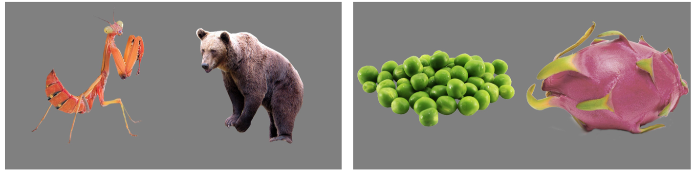
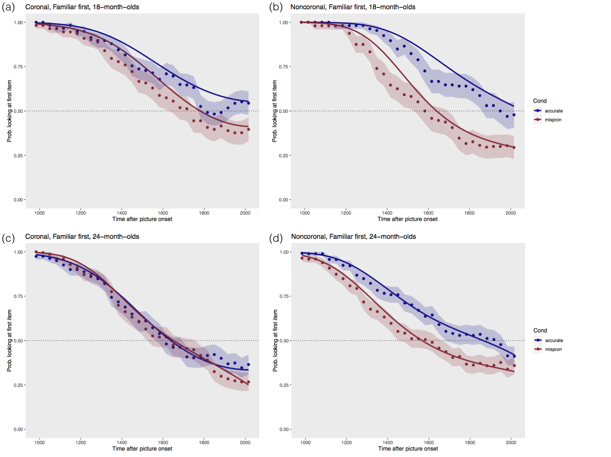

What is the nature of babies’ first word representations?
The problem
Word recognition is a complex task: On the one hand, we don’t want to confuse similar words such as “pat” and “bat”. On the other hand, we need a lot of flexibility to cope with different speakers’ individual voice, different accents and with environmental noise. So our mental representation of what a word like “dog” should sound like needs to be exactly at the right level of specificity. When children first learn words, to they store them in their mental lexicon with all the detail adults represent, or do they perhaps only store coarse representations? Such an “underspecified” lexical entry might easily be misrecognized. However, according to the linguistic theory of the Featurally Underspecified Lexicon (FUL, Lahiri & Reetz, 2010) even adults have underspecified lexical representations. Specifically, the theory predicts that so-called coronal sounds like [n],[t],[d],[s] that are produced with the “corona”of the tongue, the outer edge, are underspecified in order to deal with variability in speech. For instance: Rainbow is pronounced as [reɪmboʊ] Rain coat is pronounced as [reɪŋkoʊt] These so called ‘assimilation’ patterns occur across many languages, and assimilation happens for coronals but not noncoronals (e.g. ).The study
Using a visual world paradigm with eye tracking we tested 18- and 24-month-olds on their recognition for words starting with coronal sounds vs. noncoronal sounds. If their coronals are indeed underspecified, they should not be sensitive for mispronunciation – e.g. they should recognise both [dog] and [bog] to mean “dog”.
Figure 1. Sample stimuli: pairs of "novel" and "familiar" items.
We showed children pairs of the familiar target (e.g. duck, bear) and a “novel” object/animal (see Figure 1), and just before the pictures came up on the screen, the children heard either the accurate label for the familiar picture (duck/bear) OR a mispronounced version (*buck/*dare). If infants noticed the mispronunciation, they should be more likely to look at the novel image (as that is a potential referent for a novel word). Therefore, if coronals are underspecified (but noncoronals are fully specified), there should be a difference between words that start with a coronal vs. those that start with a non-coronal sound: For coronals like duck, dog, door we expect no or less mispronunciation sensitivity than for noncoronals like bear, bird, book (for which children should notice mispronunciations).
Results
Overall we found that children noticed mispronunciations: they looked less at the target if the word was pronounced accurately (p=.011). Their overall looking proportions did not show differences between coronal-onset words and non-coronal onset words. However, we can get much clearer insight into word processing if we examine the time course of looking across the entire trial. When the pictures are shown, children either start at the target or the novel item. If the picture matches what they heard, they tend to stay there, but if it doesn’t, they move their eyes to the other picture. In consequence, differences between looking patterns on trials with an accurate vs. mispronounced auditory item tell us to what extent the children were sensitive to the mispronunciation. Figure 2 shows looking patterns for those trials on which the familiar item was first looked at (results from novel-first trials overall show a consistent pattern).
Figure 2. Looking patterns for "familiar first" trials by age (18 vs. 24 months) and word group (coronal vs. noncoronal onset)
Modelling Approach
We used growth curve analysis (logistic mixed effects models, Mirman, 2014) to determine which of the curves were statistically different from each other. To this end we fitted 3rd order polynomials first in a base model that only contained the polynomial time terms, then added fixed effects and conducted a model comparison after every step, and finally ran posthoc comparisons to determine which conditions showed a mispronunciation effect. The best-fit model (for familiar-first trials) included 3-way interactions of Age, Condition and Onset sound (p<.0001). Posthoc tests showed that 18-month-olds had a clear mispronunciation effect for all onset sounds, i.e. no asymmetry and therefore no underspecification. By contrast, 24-month-olds’ looking patterns showed an onset-effect: For noncoronal words, the toddlers were sensitive to mispronunciation (i.e. “dare” is not “bear”). But for coronal words, the looking patterns were not statistically different.Conclusion
The implication is that children indeed appear to “underspecify” lexical entries for coronal sounds, and this likely enables dealing with assimilation. However, the really interesting finding here is that this was found only with older children and not at 18 months. That means it is the result of experience with language – in this case, experience of hearing words in different contexts (such as “rain” in rainbow and rain coat, pronounced as [m] and [ŋ]).References
Lahiri, A., & Reetz, H. (2010). Distinctive features: Phonological underspecification in representation and processing. Journal of Phonetics, 38(1), 44–59. https://doi.org/10.1016/j.wocn.2010.01.002
Mirman, D. (2014). Growth curve analysis and visualization using R. Boca Raton, FL: CRC Press / Taylor & Francis Group.